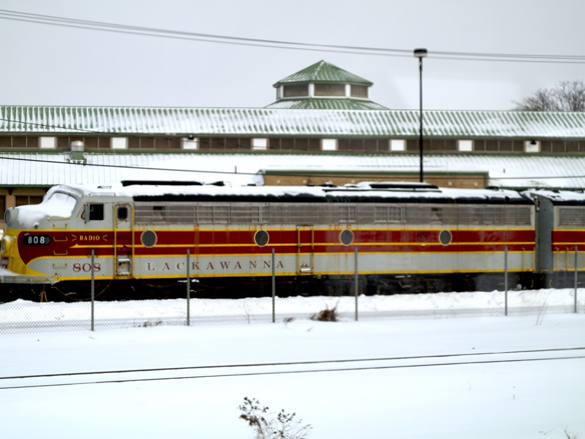
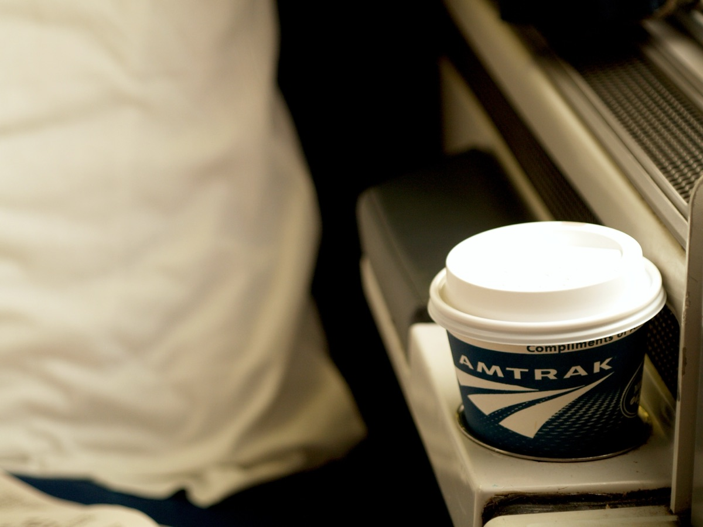
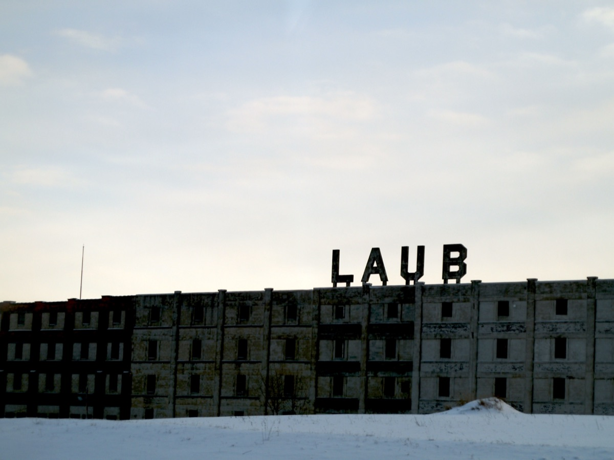
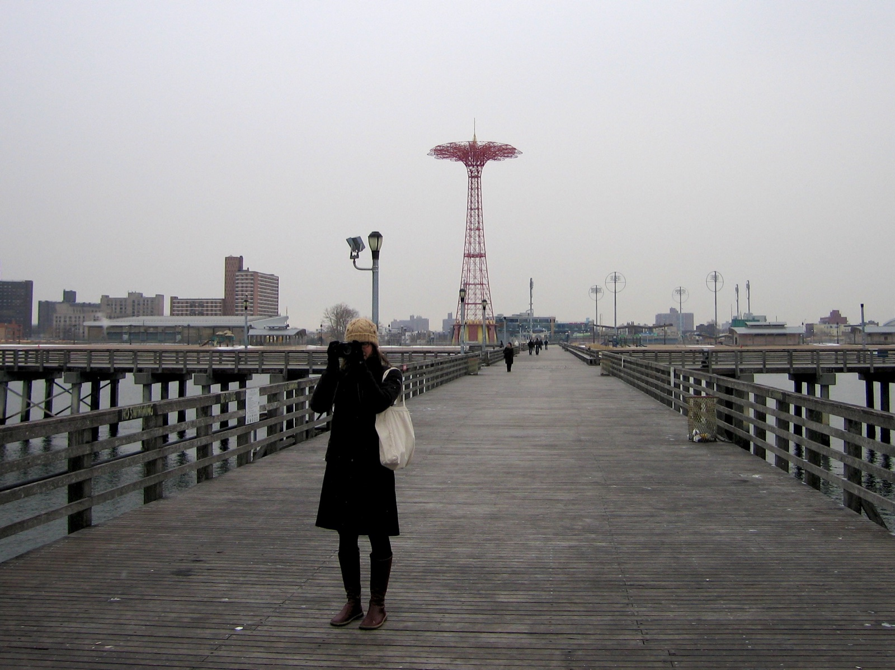
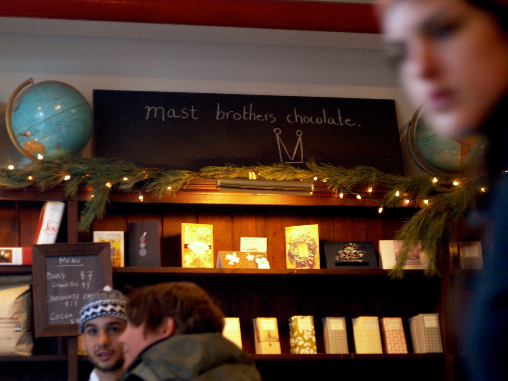
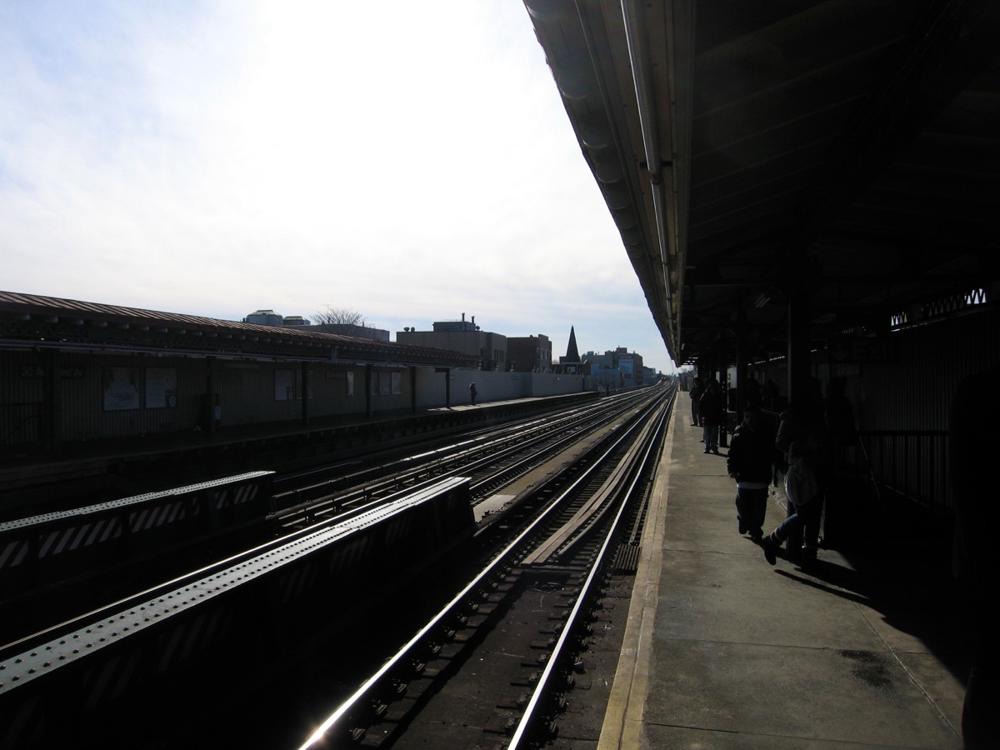
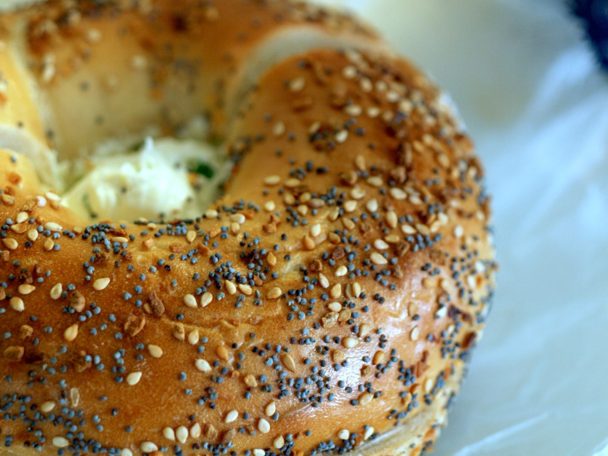
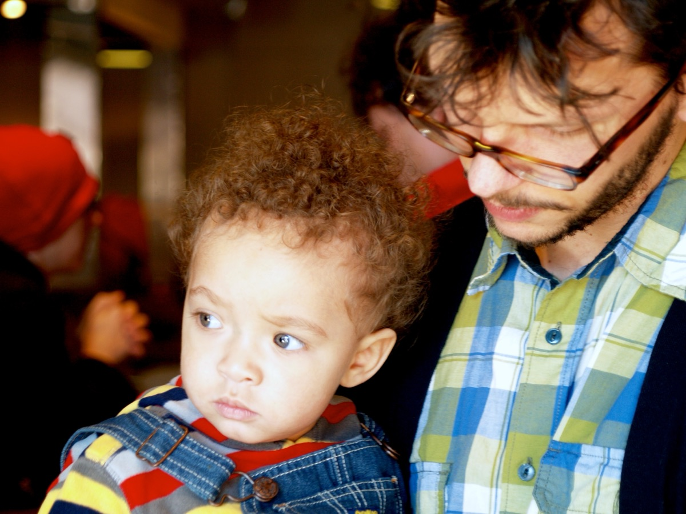
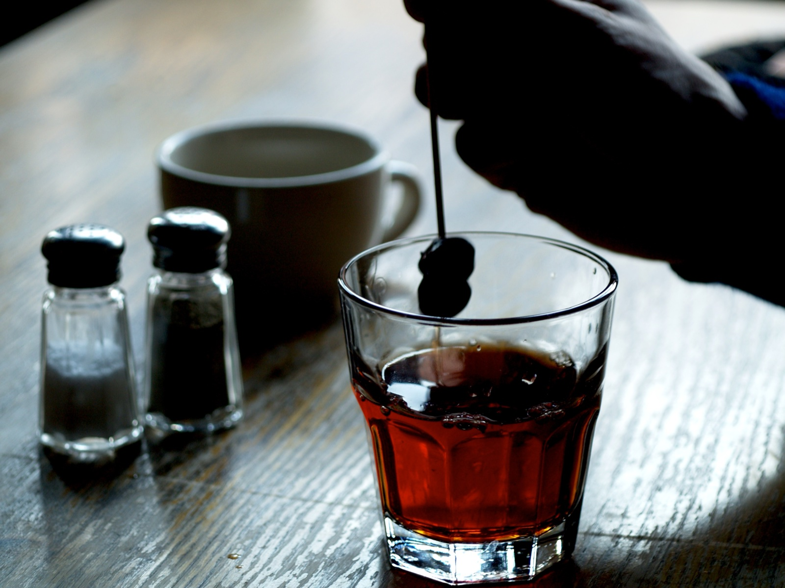

New York City
Just after the new year, Nick and I traveled to New York to visit with my cousin Matt and his lovely wife Ana. The trip was a very generous birthday gift from Nick. We both love long-distance train travel and he booked us a sleeper car on the Lake Shore Limited for the journey from Chicago.
  
Nick and I took the train to Portland, Oregon a few years ago (for Matt and Ana's wedding no less!) and have now traveled the apporoximate width of the United States by rail. There is something very serene and romantic about watching town after town and state after state pass by from a train car. We always meet fascinating fellow travelers and I love to imagine the fine-dining of days-gone-by as we enjoy meals in the dining car.
We arrived at Penn Station in the evening and met Matt and Ana, along with my Uncle Brad, Aunt Gayle, and cousin Lian, for dinner at a nice little French bistro named Bar Breton.


The next day we stopped for a bagel at Bagel Berry (a hold-in-the-wall place that had way better bagels than anywhere in Chicago) and enjoyed a windy winter afternoon at Coney Island. Nick and I have both been to New York City a number of times, but had never made the trip. We enjoyed some very mediocre food at Nathan's and then headed to Bierkraft in Brooklyn for some drinks and to get growler for dinner. That evening, Matt and Ana took us to Ali's, an Egyptian restaurant near their apartment. The food was wonderful and Ali was a warm and joyful man who made the dinner a highlight of our trip. We finished the night with a beer at Sweet Afton where I ordered my second beer of the day from the excellent (new-to-me) Captain Lawrence Brewing Company.
   
The next moring, we met my old friend Jason and his charming son Amory at Blue Bottle for fancy coffee. Nick ordered a cold brew that really was worth the hype, though my americano was a bit disappointing. We then made a quick stop at the Bagel Store before a fun tour of the Mast Brothers Chocolate Factory. We wandered around Brooklyn and stopped at Mugs Alehouse and the Manhattan Inn for drinks before meeting Nick's friend Nathaniel for dinner at Roberta's where we enjoyed delicious pizza.
On our last day, we took the train into Manhattan to visit Murray's Bagels, to take the 6 train through the out-of-service City Hall stop, and to share a warm winter lunch at Menkui Tei noodle shop.
While we weren't able to spend time with all of the people we had hoped, and we certainly weren't able to visit all of the places on our list, we packed a lot in for a three day trip. Thank you to Nick, Matt and Ana!